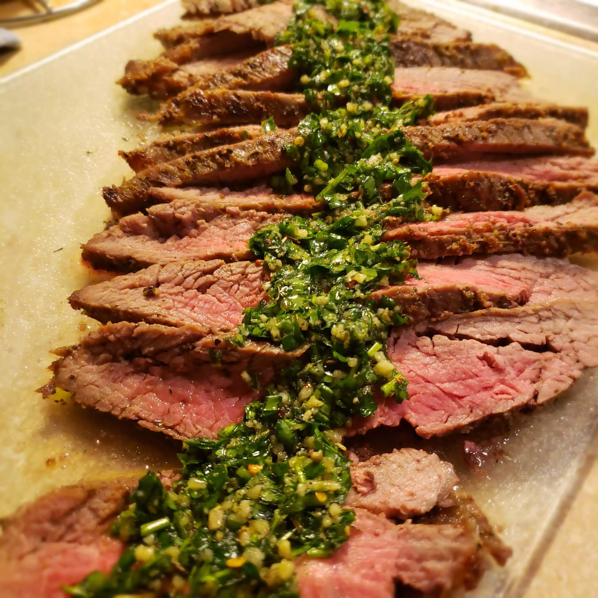

Flank Steak

Marinated Flank Steak
A great flank steak marinade like this quick and easy one is important if you want a tender, juicy, flavorful steak.
Make sure you marinate your flank steak for at least 2 hours for best results or longer if you have time. I invented
this wonderful marinated, grilled flank steak recipe and my friends and girls just love it. This recipe also works great
when the steak is sliced and used for fajitas.
Ingredients
Marinade
- ½ cup vegetable oil
- ⅓ cup low-sodium soy sauce
- ¼ cup red wine vinegar
- 2 tablespoons fresh lemon juice
- 1 ½ tablespoons Worcestershire sauce
- 1 tablespoon Dijon mustard
- 2 cloves garlic, minced
- ½ teaspoon ground black pepper
Steak
- 1 (1 1/2-pound) flank steak
Steps
- Whisk together oil, soy sauce, vinegar, lemon juice, Worcestershire sauce, Dijon mustard, garlic, and pepper for
marinade in a 9x13-inch glass baking dish until thoroughly combined.
- Add flank steak to the baking dish; turn several times to coat thoroughly with marinade. Cover, and refrigerate for 2 to
6 hours, or up to 12 hours if you have time.
- When ready to cook, preheat an outdoor grill for medium-high heat and lightly oil the grate.
- Remove steak from the marinade and shake off excess. Discard the remaining marinade.
- Cook steak on the preheated grill for about 5 minutes per side, or to desired doneness.
- Remove from the grill and let rest for 5 minutes before slicing and serving.